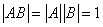
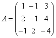

2.3 方阵的逆矩阵
一、可逆矩阵与逆矩阵
| 我们已知，对于任意一个非零数，一定存在唯一的数，使，这个数b就是数的倒数，常记成，且与互为倒数，与此类似，对矩阵，我们引入：
|
|
说明：（1）由定义，说A是可逆矩阵，要求A与其逆矩阵可交换，故A与都应是方阵。 （2）“可逆矩阵”的含义就是“可以存在逆矩阵的矩阵”。 （3）当A为可逆矩阵，其逆矩阵是唯一的，故可以记为，这里不能读成A的（-1）次方，否则容易误解为，这是没有意义的。 例如设，则存在，有，故A为可逆矩阵，B为A的逆矩阵，又如，设，则能使的矩阵B根本不存在，故A为不可逆矩阵。 |
二、矩阵可逆的条件与逆矩阵的求法
注意：伴随矩阵 在A与 例1：设二阶方阵，求 解： 故 求二阶方阵的伴随矩阵的口诀：“主交换，次变号” |
证明（必要性） 设A为可逆矩阵，则存在B，使AB=E，两边取行列式，得，所以 设 本定理给出了用伴随矩阵求逆矩阵的方法。 |
|
例2：判断是否可逆？若可逆，求。 解：由，所以A是可逆阵。 下面逐个求中每个元素的代数余子式，得到 则，于是 本题答案正确与否可通过来检验。 例3：设A为n阶方阵，证明： 证明：由，有 当时，显然有 当时，只要证，这用反证法即可得证。 假设，则 |
三、逆矩阵的性质
|
例4：设A为n阶方阵，P为n阶可逆矩阵，试证：A为对称矩阵的充要条件是 证：（必要性） 设A为对称矩阵，即，则，所以 设 由P与 |
|
例5：设n阶方阵A满足，求A，A－E和A+2E的逆矩阵。 解：由，得， 于是： 由命题1， 又由： 于是 所以 例6：设A为3阶矩阵，且，求行列式的值。 解： |
请认真答题，测试一下你对前面知识点的学习情况！
(单选题)7．若矩阵A可逆，则下列等式成立的是（ ）
【答案】C
【解析】
A.错误。应为= 。
。
B错误。应为
C正确。
【知识点】逆矩阵的性质